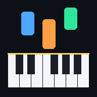

Piyano Öğren
Gerçek piyanonu çal, telefon dinlesin. Düşen notaları takip et, doğru tuşta yeşil yansın.

Gerçek piyanonu çal, telefon dinlesin. Düşen notaları takip et, doğru tuşta yeşil yansın.
Sarı çizgi eşik değeridir. Piyano sustuğunda yeşil çubuk çizginin altında, tuşa basınca üstünde olmalı.
İpucu: Piyano başında değilken ekrandaki klavyeye dokunarak da deneyebilirsin.
En iyi deneyim için telefonu yatay çevir.